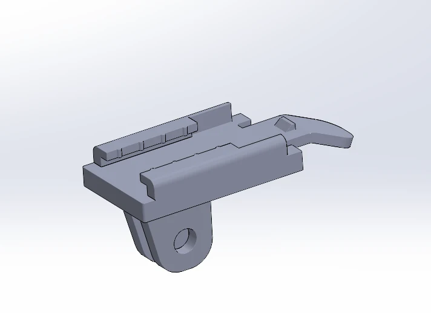
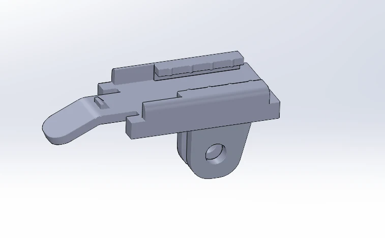
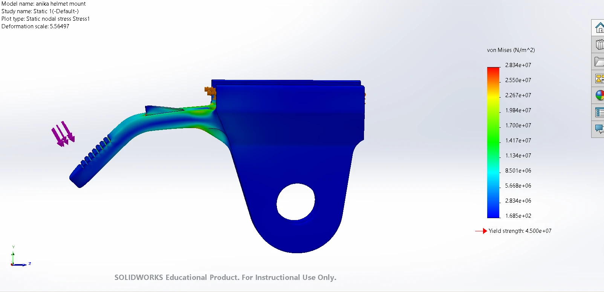
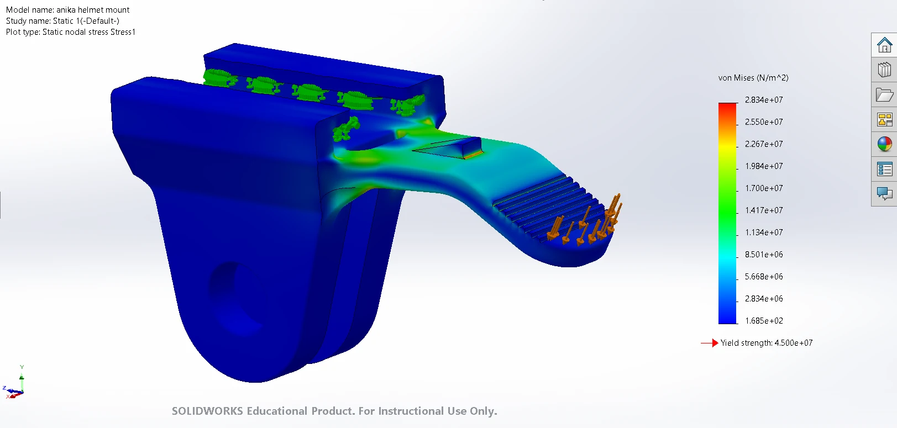
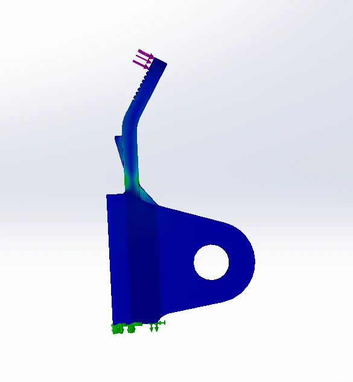

PERSONAL PROJECT / 2026
Helmet Light Mount
A removable adapter that connects a bike light to the existing GoPro-style mount on my helmet. The small snap-fit retention tab became a lesson in stress concentrations and FDM print orientation.

Click the image to view at full size.
Make existing hardware work together
The bike light was originally designed to clip into a handlebar mount. I wanted a compact adapter that recreated the light's detachable interface on top and attached to the GoPro-compatible helmet mount underneath. The flexible retention tab needed to snap into place while still allowing the light to be removed.
The geometry worked, but the tab broke
I modeled the adapter in SolidWorks and printed several prototypes. The initial retention tab could fail after one or two attachment cycles because the force needed to engage it was close to the force that caused it to fracture. I corrected fit and tolerance issues first, then tried switching from PLA to PETG-CF. The material change alone did not solve the problem.
Find the load path and stress concentrations
I ran multiple SolidWorks static stress studies, examining the load applied to the tab and stress concentrations near its root and surrounding geometry. The studies helped me identify geometries worth investigating and possible local stress raisers. They were not a calibrated model of FDM layer adhesion, so physical testing remained essential.
Change the print orientation, not the entire design
Originally, I printed the part vertically to favor the GoPro mounting prongs. However, that choice left the flexible tab vulnerable to fracture along a layer boundary. After geometric changes and material experiments produced limited improvement, I printed the existing design at approximately 45 degrees to change the layer orientation relative to the bending load.
Substantially stronger in everyday use
The angled print was much more durable in my informal physical tests and retained the quick-release function. I have not documented controlled force-to-failure or fatigue testing, so I do not claim a verified strength multiplier. The key lesson was that additive manufacturing orientation is part of mechanical design, especially for small, flexible features.
CAD / SIMULATION GALLERY
Geometry and stress investigation.
Original SolidWorks captures. Color plots are simulation results with assumed material properties and boundary conditions, not experimentally verified strength measurements.










Validation boundaries
The revised print orientation made the snap-fit tab substantially more robust during informal use, but I have not documented controlled fatigue-cycle testing or a quantified long-term failure rate. The available CAD and FEA screenshots show the geometry and stress distribution; physical durability conclusions remain based on prototype handling.
Explore other projects